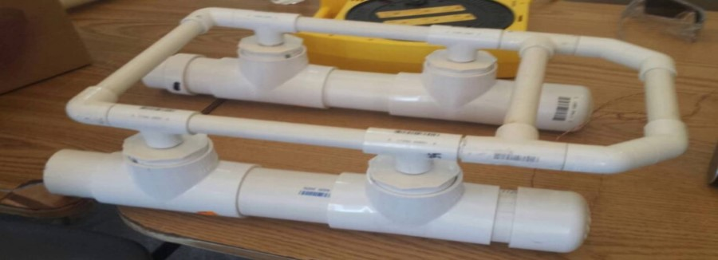

PROJECTS
Let's clean up the ocean is a project I did together with other classmates when I was in high school. This project consisted of creating an underwater robot made with: small motors, plastic tubes, cables and a hook, among other things. Later, when the structure of the robot was created, it was programmed so that it could move in the water and thus collect garbage on the shores of the beaches. This project was an underwater robotics workshop with the ULPGC imparted throughout the province of Las Palmas. The workshop as such only consisted to create a functional submarine and taste it in a swimming pool and we also used to help to clean the beaches.